| Acinzentar | |
| Desfocar | |
| Exposição | |
| Contrastar | |
| Tonalidade | |
| Opacidade | |
| Inverter | |
| Saturar | |
| Sépia | |
| Colorir | |
lápis
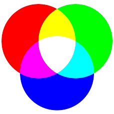
ponta
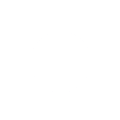
espessura
família
texto:
abc
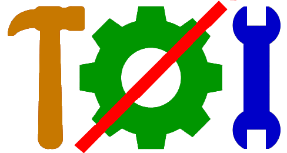
abc
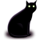
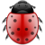
larg
altu
cor de tela

x
y
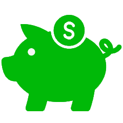
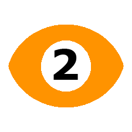
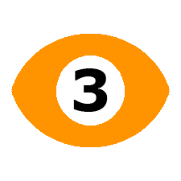
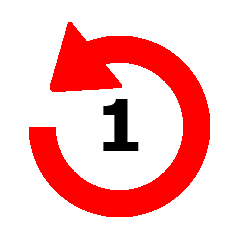
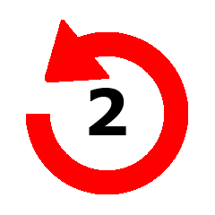
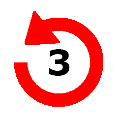
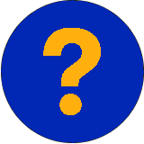
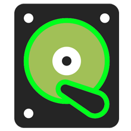
Click this icon whenever you want to see this help screen.
To scroll this help text, use the mouse wheel.
Brush and Line Tools
Using the brush or line tools, touching the screen will allow you to draw directly on your work.
So, if you are unsure about ruining your work, make a backup by clicking here .
Each time you click , the current content is transferred to , and the content of is transferred to , and the content of is transferred to.
Desta forma Você poderá recuperar seu desenho. You will have three chances to GO BACK to your previous drawings using the icons , e , and Figures, Circles, Rectangles, and Text
Figuras, Círculos, Retângulos e Textos.
By clicking on , "preferred photos,", "figures,", or , , , , ou em , you can modify a draft to: increase/decrease size, rotate photos and drawings, choose size, font type, and text color, before CLICKING to make them part of your workspace.
The +, -, and 4 arrow keys allow you to change the size of the figures. The mouse wheel allows you to rotate the figures.
Similarly, when finished, check that you are sure of the changes, because when you CLICK on the screen, the drawings will move to your work screen. Save with , before clicking on the screen.
When you finish making changes to each of the options, CLICK to EXIT the draft modifications.
The icons , and servem para Você VER as possíveis telas de desfazer eventuais erros. CUIDADO com os ícones , e , are used for you to SEE the possible undo screens for any errors. BE CAREFUL with the icons , and , because clicking on any of them WILL BRING BACK one of the screens that were previously saved.
Click to return to the work screen!
Picking a color from a point on the Screen
To "pick" the color from a location on the screen, click on , and click on the desired location... and that's it, the drawing color will be changed. CAUTION, it only works once.
If you click on the screen again, you will paint the drawing.
You will need to click on again, to pick a new color.
So:
... saves the current screen;
... lets you SEE the last saved screen;
... lets you SEE the second-to-last saved screen;
... lets you SEE the third-to-last saved screen;
... BRINGS the last saved screen;
... BRINGS the second-to-last saved screen;
... BRINGS the third-to-last saved screen;
... CLOSEs the viewed screens.
And if you want to save your work on your computer, just right-click, choose a file name and save your PNG image on your computer!!!
NOTE:
P (near) and L (far) also work to increase and decrease the size of the images.
E (left) and D (right) are also keys that rotate the images.